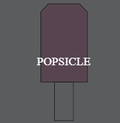

Origami Designs
Interesting Facts About Camel
- There are two types of camels: One humped or “dromedary” camels and two humped Bactrian camels.
- Camels have three sets of eyelids and two rows of eyelashes to keep sand out of their eyes.
- Camels have thick lips which let them forage for thorny plants other animals can't eat.
- Camels can completely shut their nostrils during sandstorms.
- Thanks to thick pads of skin on their chest and knees, camels can comfortably sit in very hot sand.
Interesting Facts About Chameleon
- Chameleons have eyes in the backs of their heads.
- Chameleons like it hot.
- Chameleons have extremely powerful tongues.
- Chameleons take a while to hatch, and don’t live very long.
- Their hands and feet have large toes that help them cling to branches.
Interesting Facts About Pidgeon
- Pigeons are highly sociable animals.
- Pigeons mate for life, and tend to raise two chicks at the same time.
- Both female and male pigeons share responsibility of caring for and raising young.
- Despite the social perception as dirty and disease-ridden, pigeons are actually very clean animals.
- Pigeons and humans have lived in close proximity for thousands of years. The first recordings of this date back to Mesopotamis, modern Iraq, in 3000bc.

Interesting Facts About Teddy Bear
- The teddy was named after President Theodore Roosevelt, after he refused to shoot a bear during a 1902 hunting trip.
- Inspired by a cartoon featuring the event, shopkeeper Morris Michtom and his wife Rose made a stuffed bear with a sign 'Teddy's bear' and left it in their shop window.
- They aren’t just for children – 40% of teddy sales are for adults, and a quarter of us still has our childhood companion.
- A teddy has been into space! Magellan T Bear boarded Space Shuttle Discovery in 1995 as part of a school project.
- Meanwhile, in Germany in the same year, the Steiff family developed a silk-like fabric bear, based on zoo animals. They caused a sensation at a toy fair and were snapped up by an American buyer.
Interesting Facts About Panda
- They have great camouflage for their environment.
- Their eyes are different to normal bears.
- Cubs are well protected in their first month.
- They spend a lot of their day eating.
- But they do occasionally eat something other than bamboo.

Interesting Facts About Flying Cicada
- Cicadas can survive a huge fall as babies, or nymphs.
- The loud whirring or buzzing sound you hear is an all-male cicada chorus.
- They're true bugs (from the order Hemiptera).
- Most have red-orange eyes.
- Females may be attracted to the sound of motors.

Interesting Facts About Heart Wings
- Heart Wings are associated with Valentine's Day.
- First Valentine Was Written From a Prison.
- 'Sweethearts' Candies Started Out as Lozenges.
- Cupid Began as a Greek God.
- Handing out Valentines is an ancient tradition.

Interesting Facts About Popsicle
- The Popsicle was invented by an 11 year old who kept it secret for 18 years.
- Popsicles originally came in seven flavors thought to be root beer, cherry, lemon, orange, banana, grape, and watermelon.
- The most popular Popsicle flavor is Cherry.
- Epperson changed the name of his treat to "Popsicle", after his children always asked for "Pop's 'sicle", and signed up for a patent.
- Ruby Rockets may be the healthiest low-sugar popsicle brand out there, since they're all made from whole foods with no added sugar.

Interesting Facts About Butterfly Fish
- They have thin, disk-shaped bodies that closely resemble their equally recognizable cousins, the angelfish.
- They spend their days tirelessly pecking at coral and rock formations with their long, thin snouts in search of coral polyps, worms, and other small invertebrates.
- There are at least 114 species of butterflyfish.
- The approximately 129 species in 12 genera are found mostly on the reefs of the Atlantic, Indian, and Pacific Oceans.
- Most Butterflyfish use their sharp dorsal or top fin to defend themselves, but are relatively peaceful toward other tank inhabitants.